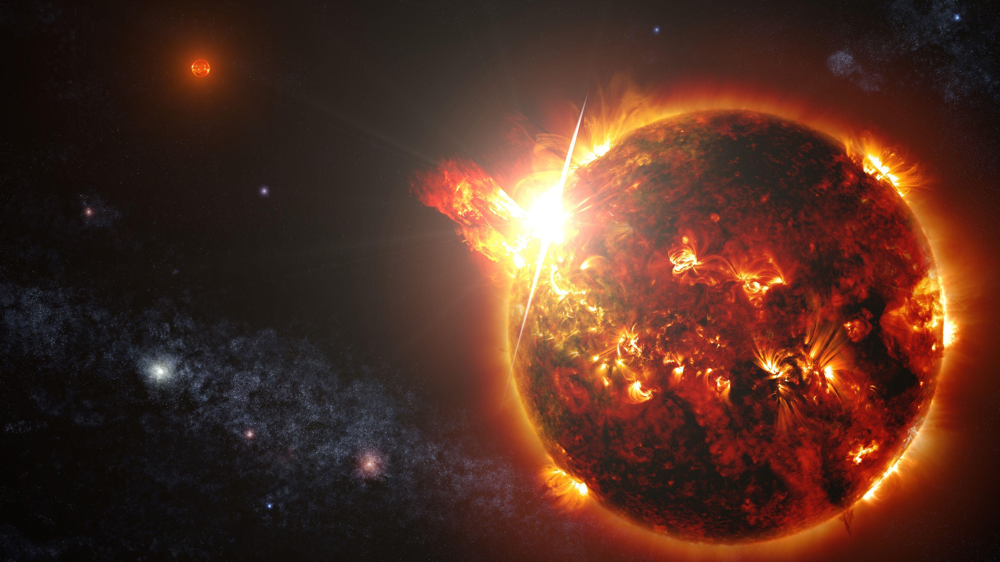

TSK'nın Kuzey Irak'taki operasyonlarının bölgedeki yansımaları nasıl
oldu?
Türk Silahlı Kuvvetleri, Irak'ın kuzeyindeki terör hedeflerine yönelik
gerçekleştirdiği hava harekatında, savaş uçakları, tanker uçakları,
Havadan İhbar Kontrol (HİK) uçağı ve İHA'larla koordineli bir
operasyon düzenledi. Harekat, terör örgütüne ait 16 hedefin imha
edildiği bir operasyon olarak gerçekleşti.
Yapılan istihbarat çalışmaları sonucunda belirlenen hedeflere yönelik
düzenlenen harekatta, terör örgütünün barınakları, sığınakları,
mağaraları, tünelleri ve mühimmat depoları hedef alındı. Harekat,
terörün kaynağında yok edilme stratejisi çerçevesinde planlandı ve
icra edildi. Yerli ve milli mühimmat kullanılarak gerçekleştirilen
hava harekatında, savaş uçaklarına ek olarak tanker uçakları, HİK
uçağı ve İHA'lar da aktif olarak görev aldı.
Gelişen olaylar sonucunda uçaklar, havada yakıt ikmali yaparak 3
farklı muharip üsten kalkarak sınırdan 140 kilometre uzaklıktaki Asos
dahil olmak üzere teröristlerin bulunduğu noktaları eş zamanlı vurdu.
Harekatın detayları, terör örgütü PKK'nın Ankara'da gerçekleştirdiği
bombalı saldırı girişimi sonrasında gerçekleşen üç gün içindeki ikinci
büyük hava harekatına dikkat çekiyor. Harekatlar neticesinde 36
hedefin imha edildiği bildirildi.
2024 Bedelli askerlik ücreti belli oldu
2024 yılında geçerli olacak bedelli askerlik ücreti, memur maaş zammı
oranlarına göre belli oldu. Bedelli askerlik ücreti, yüzde 49.25 zam
ile birlikte 182 bin 608 TL’ye yükselecek. Türkiye İstatistik
Kurumu’nun (TÜİK) aralık ayı enflasyon verilerini açıklamasıyla
birlikte bedelli askerlik ücretleri de belli oldu. Enflasyon, Aralık
2023’te aylık bazda yüzde 2,93 artarken yıllık bazda yüzde 64,77 oldu.
2023’ün Ocak-Haziran döneminde 104 bin 84 TL olan bedelli askerlik
ücreti, Temmuz-Aralık dönemi için 122 bin 351 liraya çıkartılmıştı.
Bedelli askerlik tutarı, geçmişte yapılan düzenleme ile memur maaş
katsayısındaki orana sabitlenmişti. 2024 yılında geçerli olacak
bedelli askerlik ücreti, memur maaş zammı oranlarına göre belli oldu.
Memur ve memur emeklisinin alacağı zam oranı yüzde 49.25 oldu Böylece
bedelli askerlik ücreti ne yapılacak zam, bu oranda olacak. Buna göre
122 bin 351 lira olan bedelli askerlik ücreti, yüzde 49.25 zam ile
birlikte 182 bin 608 TL’ye yükselecek.
Hyperion'ın süper arabası hidrojenle çalışıyor
Uzay teknolojisi ile araba tasarlansa ne olurdu? sorusunun cevabı
Hyperion XR-1'de gizli. Kaliforniya merkezli yeni kurulan Hyperion'ın
tasarladığı XR-1 ne benzinle ne de elektirikle çalışıyor. Tıpkı uzaya
gönderilen roketler gibi hidrojen ile harekete geçiyor. Hidrojenle
çalışan arabanın depo kullanımı ise oldukça tasarruflu
Hidrojen ile çalışan araba tek depo ile 1600 km gidebiliyor Araç,
hidrojen suyunu sıfır emisyonlu güce dönüştürmek için birden fazla
elektrik motora sahip. Bu sayede Hyperion, dolu bir depoyla 1600 km
mesafeyi katedebiliyor. Şirketin CEO'sunun iddiasına göre ise; XP-1'i
tam kapasiteli doldurmak beş dakikada mümkün.
2022'de satışa çıkması planlanıyor Uzun süredir yüzlerce mühendisin
üzerinde çalıştığı projenin şu anda elimizde sadece prototipi
bulunuyor. Şirketin hedefi ise 2022 yılına kadar XP-1'i tamamen hazır
hale getirip seri üretime geçmek.
Chat GPT-4 Neler Yapabilir
ChatGPT4'ün yapabilecekleri arasında şunlar yer alıyor:
Metin oluşturma: ChatGPT4, şiirler, kodlar, senaryolar, müzik
parçaları, e-posta, mektuplar vb. gibi farklı yaratıcı metin
formatları oluşturabilir. Dil çevirisi: ChatGPT4, İngilizce'den
Fransızca'ya, İspanyolca'ya, Çince'ye vb. gibi farklı dillere çeviri
yapabilir. Soru cevaplama: ChatGPT4, açık uçlu veya zorlayıcı olsalar
bile, sorularınızı bilgilendirici bir şekilde cevaplayabilir. Yaratıcı
içerik yazma: ChatGPT4, hikayeler, şiirler, şarkı sözleri, senaryoları
vb. gibi yaratıcı içerikler yazabilir.

ChatGPT4'ün yetenekleri, önceki sürüm olan ChatGPT3'e göre önemli
ölçüde geliştirilmiştir. ChatGPT4, 25.000 kelimeye kadar metni okuyup
analiz edebilir, görüntüleri işleyebilir ve basit esprileri
anlayabilir. Ayrıca, tüm büyük programlama dillerinde kod yazabilir.
ChatGPT4, eğitim ve eğlence gibi çeşitli alanlarda kullanılabilecek
güçlü bir araçtır. Eğitimde, öğrencilerin yeni kavramları
öğrenmelerine ve dillerini geliştirmelerine yardımcı olabilir.
Eğlencede, hikayeler, şiirler, şarkı sözleri vb. gibi yaratıcı
içerikler üretmek için kullanılabilir. ChatGPT4'ün gelecekte nasıl
kullanılacağı henüz belli değil. Ancak, yetenekleri göz önüne
alındığında, çeşitli alanlarda önemli bir rol oynaması bekleniyor.
Dünya Bankası'ndan Türkiye ve küresel büyüme tahmini
Dünya Bankası son yayımladığı projeksiyonlarda yüksek borçlanma
maliyetleri ve jeopolitik gerilimlerin etkisiyle küresel ekonominin
2024'te kadarki 5 yıllık dönemde 30 yılın en kötü performansına
ilerlediği uyarısını yaptı. Küresel büyümenin 2020-2024 yıllarında
yüzde 2,2 olarak 1990-1994 dönemindeki yüzde 2,1'lik orandan beri en
yavaş büyüme olması bekleniyor.
Banka ABD için büyüme beklentisini 2024 için yüzde 1,6'ya yükseltti.
Çin'in büyüme tahmini yüzde 4,5, Euro Bölgesi büyüme tahmini yüzde 0,7
oldu. Kurum Türkiye'nin 2023'te yüzde 4,2, 2024'te yüzde 3,1, 2025'te
yüzde 3,9 büyüyeceğini öngördü.Banka, 2024'te küresel büyümenin geçen
seneki yüzde 2,6'dan yüzde 2,4'e ineceği beklentisini korurken, 2025
tahminini yüzde 2,7'ye düşürdü.
"jeopolitik gerilimler dünya ekonomisi için kısa vadede yeni
tehlikeler oluşturabilir "
Küresel ekonominin bir yıl öncesine göre daha iyi bir yerde olduğuna
işaret edilen raporda, küresel resesyon riskinin, büyük ölçüde ABD
ekonomisinin gücü sayesinde azaldığı ancak artan jeopolitik
gerilimlerin dünya ekonomisi için kısa vadede yeni tehlikeler
oluşturabileceği vurgulandı. Raporda, büyük ekonomilerin çoğunda
büyümeyle küresel ticaretin yavaşlaması ve on yıllardır görülen en
sıkı finansal koşullar nedeniyle gelişmekte olan birçok ekonominin
orta vadeli görünümünün karardığı ifade edildi.
Bu yıl küresel ticaret büyümesinin pandemiden önceki 10 yılın
ortalamasının yalnızca yarısı olmasının beklendiğine değinilen
raporda, gelişmekte olan ekonomilerin borçlanma maliyetlerinin yüksek
kalması ve küresel faiz oranlarının enflasyona göre düzeltilmiş olarak
son 40 yılın en yüksek seviyelerinde olmasının muhtemel olduğu
belirtildi.
Güneş patlaması nedir, ne zaman olacak?

Bazı bilim insanları tarafından yapılan uyarılara göre 2024 yılı
başlarında Güneş fırtınalarının Dünya’yı etkileyebilir. Patlama
sonucunda binlerce atom bombasından daha yüksek bir enerji ortaya
çıkıyor ve milyarlarca megaton gücündeki patlama nedeniyle uzaya ve
doğal olarak dünyaya da radyasyon yayılıyor. Bu patlamalar genellikle
kısa dalga radyo iletişimi etkiliyor.
Güneş patlaması veya Güneş püskürtüsü, Güneş'in gaz yuvarında
(atmosfer) gerçekleşen şiddetli patlamalara verilen addır. Bu
patlamalar milyarlarca megaton gücünde olup, genelde saatte 1.000.000
km/saat hızla hareket ederler.
6x1025 Patlama sonucunda joule'e kadar enerji açığa çıkarabilir. Güneş
püskürtüsü nedeniyle Dünya atmosferine normalin üzerinde küçük dalga
boylu radyasyon parçacıkları girer. Bu püskürtüler sonucunda
yeryüzündeki iletişim ve güç ağları olumsuz yönde etkilenebilir.
Güneş patlamaları, Güneş atmosferinin bütün tabakalarını (fotosfer,
korona ve kromosfer) etkiler, plazmayı onlarca milyon kelvine çıkarıp
elektronları, protonları ve daha ağır iyonları neredeyse ışık hızıyla
uzaya fırlatır. Ayrıca bütün elektromanyetik tayfa yayılmış radyasyon
üretirler. Çoğu Güneş patlamaları, şiddetli manyetik alanların
fotosfere girdiği Güneş lekeleri gibi aktif bölgelerde oluşur. Güneş
püskürtüleri magnetik birleşmelerden dolayı oluşurlar. İlk oluşum ise
1859 yılında gözlemlenmiştir ve Carrington Olayı olarak adlandırılır.